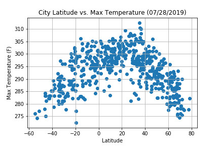
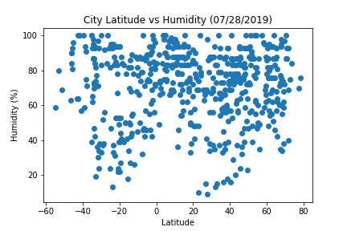
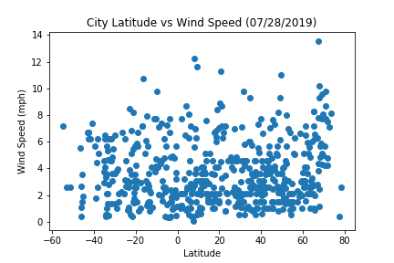

<!doctype html>
<html>
    <head>
        <link href="bootstrap.min.css" rel="stylesheet">
        <script src="https://kit.fontawesome.com/59da3f9c84.js"></script>
    </head>
</html>

<body>
    <div class="container-fluid">
      <h1 class="text-primary text-left"><strong>Latitude Analysis </strong><span><i class="fas fa-cloud-sun-rain"></i></span></h1>
    </div>
    <nav class="navbar navbar-expand-lg navbar-light bg-light">
        <a class="nav-link active" href="landing_page.html"><i class="fas fa-home"></i></a>
        <button class="navbar-toggler" type="button" data-toggle="collapse" data-target="#navbarNavDropdown" aria-controls="navbarNavDropdown" aria-expanded="false" aria-label="Toggle navigation">
        <span class="navbar-toggler-icon"></span>
      </button>
      <div class="collapse navbar-collapse" id="navbarNavDropdown">
        <ul class="navbar-nav">
          <li class="nav-item active">
            <a class="nav-link" href="#"> <span class="sr-only">(current)</span></a>
          </li>
          <li class="nav-item">
            <a class="nav-link" href="comparisons.html">Comparisons</a>
          </li>
          <li class="nav-item">
            <a class="nav-link" href="data.html">Data</a>
          </li>
          <li class="nav-item dropdown">
            <a class="nav-link dropdown-toggle" href="http://example.com" id="navbarDropdownMenuLink" data-toggle="dropdown" aria-haspopup="true" aria-expanded="false">
          Plots
          </a>
          <div class="dropdown-menu" aria-labelledby="navbarDropdownMenuLink">
            <a class="dropdown-item" href="cloudiness.html">cloudiness</a>
            <a class="dropdown-item" href="humidity.html">humidity</a>
            <a class="dropdown-item" href="max_temp.html">max temperature</a>
            <a class="dropdown-item" href="wind.html">wind speed</a>
          </div>
          </li>
        </ul>
      </div>
    </nav>
  
    <!-- Optional JavaScript -->
    <!-- jQuery first, then Popper.js, then Bootstrap JS -->
    <script src="https://code.jquery.com/jquery-3.2.1.slim.min.js" integrity="sha384-KJ3o2DKtIkvYIK3UENzmM7KCkRr/rE9/Qpg6aAZGJwFDMVNA/GpGFF93hXpG5KkN" crossorigin="anonymous"></script>
    <script src="https://cdnjs.cloudflare.com/ajax/libs/popper.js/1.11.0/umd/popper.min.js" integrity="sha384-b/U6ypiBEHpOf/4+1nzFpr53nxSS+GLCkfwBdFNTxtclqqenISfwAzpKaMNFNmj4" crossorigin="anonymous"></script>
    <script src="https://maxcdn.bootstrapcdn.com/bootstrap/4.0.0-beta/js/bootstrap.min.js" integrity="sha384-h0AbiXch4ZDo7tp9hKZ4TsHbi047NrKGLO3SEJAg45jXxnGIfYzk4Si90RDIqNm1" crossorigin="anonymous"></script>
  </body>


  <body style="background-color: #EEEEEE" class="container-fluid">
    <div class="row">
      <div class="col-md-6">
        <div class="container jumbotron" style="margin-top: 20px;">
            <h2 style="text-align: center"> Maximum Temperature &nbsp;&nbsp; <i class="fas fa-thermometer-three-quarters"></i> </h2>
            <p>
              
              <div style="padding-top: 1%; text-align: justify">
                  This scatter plot shows an interesting, clear relationship between latitude and temperature. If we performed a 
                  polynomial regression, we could accurately model this dataset with a parabollic equation. Although I would expect 
                  the vertex of the parabola (the highest observed temperatures) to be near 0-degree latitude, it is important to remember
                  that this dataset is a representation of the temperatures on July 28, 2019. <br>
        
                  <br>With this in mind, it is possible that the shift of higher temperatures toward the upper half of the Earth can be explained
                  knowing the planet's position relative to the sun, taking into consideration its axial tilt. For example, in July, it is summer in
                  the U.S. but winter in Peru. Taking a larger sample of data points throughout the year, we might see the parabola shifting to the left. 

                  </ul>
              </div>
            </p>
        </div>
      </div>
    
    
    
      <!--<button class="btn btn-block btn-info"><i class="fa fa-info-circle"></i> Info</button>-->
    
      <!--Link to Visualizations -->
      <div class="col-md-6">
        <div class="container jumbotron" style="margin-top: 20px">
          <div style="padding-bottom: 10px;">
            <h3 class="text-primary text-center "> Click on one of the graphs for more information </h3>
          </div>
          <div class="container">
            <div class="row">
              <div class="col-md-6 text-center">
                  <a href="cloudiness.html"></a>
              </div>
              <div class="col-md-6 text-center">
                  <a href="humidity.html"></a>
              </div>
            </div>
            <div class="row">
              <div class="col-md-6 text-center">
                <a href="max_temp.html"> </a>
              </div>
              <div class="col-md-6 text-center">
                <a href="wind.html"> </a>
              </div>
            </div>
          </div>
        </div>
      </div>
    </div>
    </body>